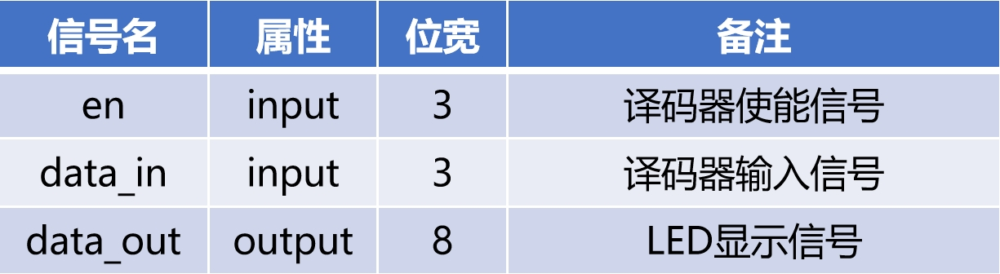
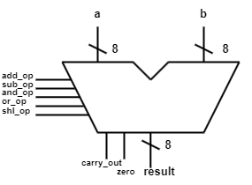
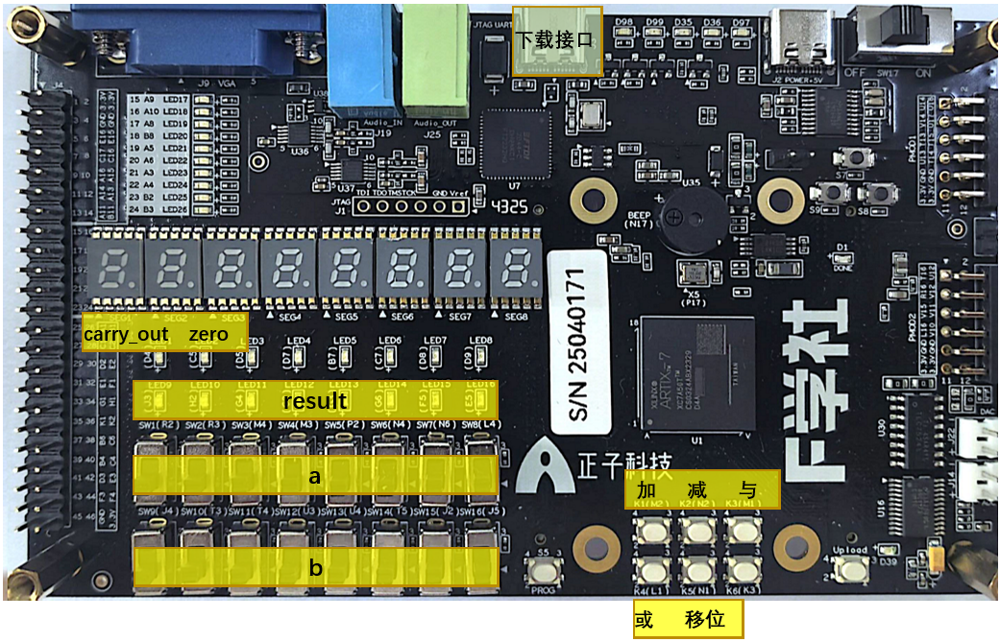

实验内容
1、实验目的¶
（1）熟悉EGO2实验板的功能和使用方法；
（2）掌握 Vivado 的开发环境及开发流程；
（3）运用Verilog语言描述组合逻辑电路，理解仿真波形。
(4) 初步掌握运算器工作原理和设计方法。
2、实验内容¶
（1）以3-8译码器为例，在Vivado中建立工程，导入提供的代码，运行综合、实现、生成比特流文件，下载到EGO2开发板，验证结果。
3-8译码器接口定义¶

(2) 例化3-8译码器，实现3人表决电路设计，完成代码设计，运行综合、实现、生成比特流文件，下载到EGO2开发板，验证结果。
（3）使用Verilog实现2输入4位多路复用器，拨码开关作为输入，输出驱动Led显示，运行仿真、上板验证。
运算器¶
算术逻辑单元（ALU）是计算机中央处理器（CPU）中的核心部件，主要完成算术运算和逻辑运算，包括加法、减法、按位逻辑运算、移位等。
ALU除了完成算术逻辑运算，还应输出一些必要的标志信息（Flags），如零标志位ZF、符号标志位SF、溢出标志位OF、进位/借位标志位CF等，主要被用于异常处理、程序流控制等。
下图给出本次实验需要实现的一个8位ALU的逻辑框图和端口列表。

| 端口 | 方向 | 位宽 | 说明 |
|---|---|---|---|
a |
input | [7:0] | 操作数 A |
b |
input | [7:0] | 操作数 B |
add_op |
input | 1 | 操作码：加法 , 0 有效 |
sub_op |
input | 1 | 操作码：减法 , 0 有效 |
and_op |
input | 1 | 操作码：按位与 , 0 有效 |
or_op |
input | 1 | 操作码：按位或 , 0 有效 |
shl_op |
input | 1 | 操作码：左移 , 0 有效 |
result |
output | [7:0] | 运算结果 |
carry_out |
output | 1 | 进位 / 借位 / 移位溢出位 |
zero |
output | 1 | 零标志：result == 8'h00 时置 1 |
-
操作数： a 和 b 均为8位；
-
操作码： 共支持5种运算，只有一种运算符有效；加法、减法、按位与、按位或和逻辑左移；
-
运算结果： result 8位；
-
标志位： carry_out 用来表征 加法的进位、减法的借位和左移移位运算的移出位；zero 表征运算结果为 0 。
3、实验步骤¶
3.1 3-8译码器¶
按照Vivado开发流程一节完成3-8译码器的上板， 上板现象为，拨动拨码开关（根据约束文件找到对应的拨码开关，拨码开关往上输入是1），led灯会按照真值表的输出值变化，输出为1对应的led亮。
3-8译码器全程用到的代码都已经写好，可直接使用下面代码文件。
3.2 运算器¶
1、创建工程，工程名为ALU；
2、自行编写 并添加设计文件alu.sv ；
本模块实现一个 8 位组合逻辑运算器。
运算器有两个操作数 a、b；
支持5种运算方式：加法、减法、按位与、按位或、左移 ；
输出运算结果result、进位/借位标志carry_out和零标志zero。
进位逻辑可以省略
| 操作 | 控制码（add,sub,and,or,shl） |
result |
carry_out |
说明 |
|---|---|---|---|---|
| 加法 ADD | 10000 |
(a + b) |
1 : 有进位 | |
| 减法 SUB | 01000 |
(a − b) |
1 : 发生借位 | 可以用 a + (~b+1) 实现 |
| 按位与 AND | 00100 |
a & b |
0 | 逐位逻辑与 |
| 按位或 OR | 00010 |
a \| b |
0 | 逐位逻辑或 |
| 左移 SHL | 00001 |
a << 移位量 |
移出的最高位 | a << b[2:0] |
| 空操作 NOP | 00000 |
8'h00 |
0 | zero 恒为 1 |
`timescale 1ns / 1ps
// 完成8位算术逻辑单元（ALU）的建模。 支持 加法、减法、按位逻辑运算、移位
module alu (
input logic [7:0] a, b,// 第一个操作数
input logic add_op, sub_op, and_op, or_op, shl_op, // 操作码对应：加法、减法、按位与、按位或、逻辑左移
// 对应位 0 有效； 只有一个操作码为0，其他为1 ；
// 对应按键 K1、K2、K3、K4、K5 ,按下为 0 ；
// shl_op: 左移操作完成 操作数 a << b [2:0]，即左移 b 位;
output logic [7:0] result, // 结果
output logic carry_out, // 进位输出
output logic zero // 零标志
);
endmodule
3、添加提供的文件testbench.v，并完成仿真；
4、自行编写并添加约束文件，并综合实现，生成比特流；
对应引脚定义的板卡信号。

5、将生成的比特流下载到开发板验证；
后续的实验中，若指定了工程名、文件名请按照指定的名字命名，没有指定名字的可自行命名。
3.3 使用 138 实现3人表决电路¶
例化上面的decoder_38模块实现3人表决电路。
3人表决器真值表。
| A | B | C | Vote |
|---|---|---|---|
| 0 | 0 | 0 | 0 |
| 0 | 0 | 1 | 0 |
| 0 | 1 | 0 | 0 |
| 0 | 1 | 1 | 1 |
| 1 | 0 | 0 | 0 |
| 1 | 0 | 1 | 1 |
| 1 | 1 | 0 | 1 |
| 1 | 1 | 1 | 1 |
- 1 完成表决电路顶层模块设计，要求使用assign 的逻辑表达式语句实现。
`timescale 1ns / 1ps
module vote (
input a,b,c,
output logic vote
);
endmodule
- 2 创建vivado工程，添加提供的仿真文件testbench.v，并完成仿真；
-
3自行编写并添加约束文件，并综合实现，生成比特流；
-
4 综合、实现、下载，上板验证表决电路功能。
4、验收要求¶
课上检查：
- 运算器功能验证演示
两组数据的运算展示，验证运算结果。
按报告要求提交实验报告：
-
加法器仿真波形分析、RTL Analysis和Synthesis schematic截图及代码
-
表决电路仿真波形分析、RTL Analysis和Synthesis schematic截图及代码
仿真分析参考3-8译码器仿真分析示例
RTL Analysis和Synthesis schematic获取请查看“Vivado开发流程：综合、实现和下板”一节。
选做
课后作业的RTL Analysis和Synthesis schematic截图、仿真和整体的分析说明